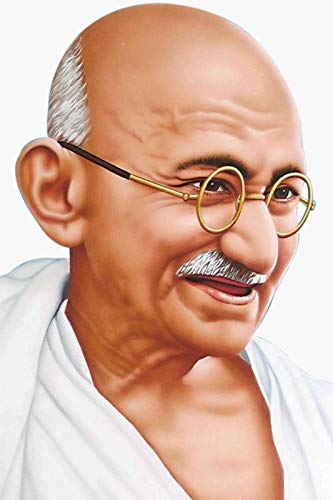

Mahatma Gandhi
1869 - 1948
About the Legeng
- Mohandas Karamchand Gandhi. Gandhi was born in Indian Hindu family on 2 October, 1869 in Porbandar, Gujarat.
- His full name was Mohandas Karamchand Gandhi. His father name was Karamchand Gandhi,
- he was served as Diwan of Porbandar, Rajkot and Zamindari, Gandhi's mother name was Putlibai who was from Pranami Vaishnava Hindu family.
- Mahatma Gandhi at the age of 9 he studied in Porbandar and he was an average student, won some prizes but was a shy student with no interest in game.
- At the age of 11 he went to high school Rajkot, while at high school Gandhi's elder brother introduced him to a Muslim friend named Sheikh Mehtab was older in age taller and encouraged to eat meat to gain height. In May 1883, in the age of 13 years he got married to 14 years old Kasturba Makhanji Kapadia, short name is "Kasturba" which was arranged marriage and they had four sons who were Harilal, Manilal,Ramdas and Devdas.
- Harishchandra had a great impression on Gandhi in his childhood.
- After, study Gandhi went to England for law education. His time in England in English culture including dancing lesson.
- He could not praise the vegetarian food offered by his landlady and maximum time he feel hungry until he found one of London's few vegetarian restaurant Gandhi had a friendly relationship with the president of London vegetarian society.
- After returning back he started the practice of law in Mumbai. Mahatma Gandhi was the follower of truth and non-violence. In April 1893, Gandhi aged 23, he went to South Africa to be the lawyer for Abdullah's cousin, and he spend 21 years in South Africa where he developed his political, truth, force, rules and moral values.
- But at South Africa in 1914 Gandhi was thrown out from local transport because of his black dark skin tone sitting with a white man and they want all white tone men in local transport.